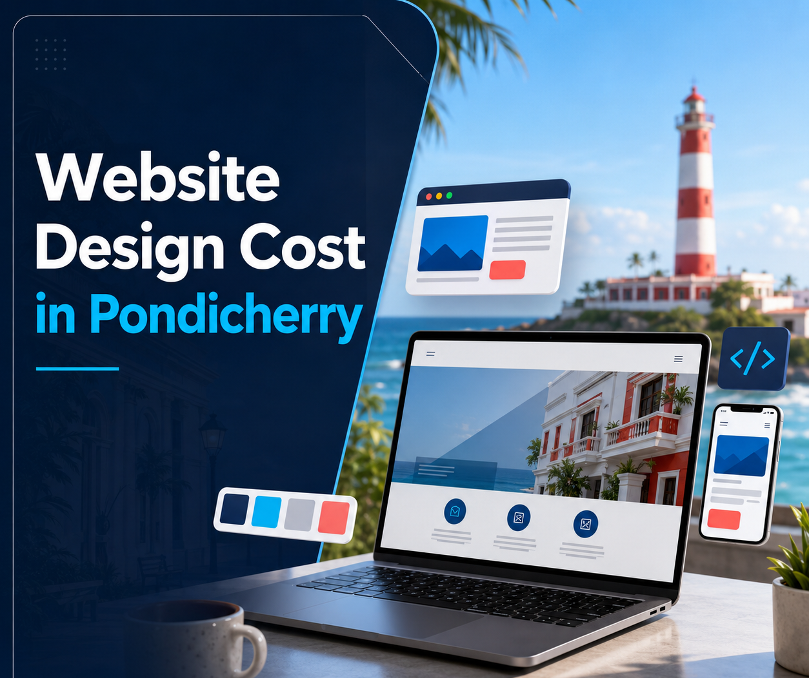
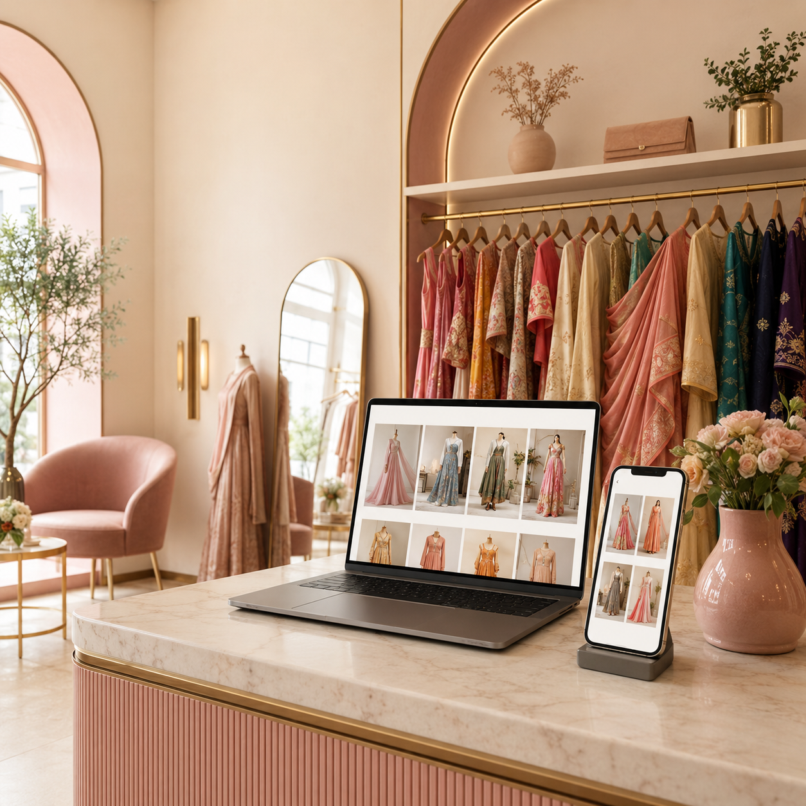

Website Design Cost in Pondicherry: Complete Pricing Guide for Businesses (2026)

A professional website works like your digital showroom — open 24 hours a day, 7 days a week.
Quick Answer
Wondering about the website design cost in Pondicherry? The cost depends on the type of website, number of pages, custom features, SEO requirements, and business goals. Whether you're a small business owner, startup, clinic, restaurant, boutique, or woman entrepreneur in Pondicherry, Cuddalore, Villupuram, or anywhere in Tamil Nadu, a professionally designed website is one of the smartest long-term investments for business growth.
Why Every Business Needs a Website in 2026
Think about how people find businesses today. They search on Google, compare websites, check reviews, browse services, and only then contact a business.
If your business doesn't have a website, many potential customers may choose your competitors instead. A professional website works like your digital showroom — available 24 hours a day, 7 days a week, helping customers learn about your business anytime.
Whether you own a restaurant in White Town, a clinic in Lawspet, a boutique in Villupuram, or a home-based business in Cuddalore, having a website builds trust and helps attract more customers.
What Determines Website Design Cost in Pondicherry?
Many people ask, "How much does a website cost?" The answer depends on what your business actually needs. Some businesses require only a simple website, while others need advanced features like online payments, appointment booking, or e-commerce. The final cost is influenced by several factors.
Number of Pages
A small business website with Home, About, Services, and Contact will naturally cost less than a website with 30 or 50 pages. The more pages you need, the more time is required for design, content, and optimization.
Custom Design vs Ready-Made Templates
Template-based websites are quicker to build and suitable for many small businesses. Custom-designed websites provide unique branding, better user experience, flexible layouts, and stronger business identity. Businesses looking to stand out often prefer custom designs.
Mobile Responsiveness

Today, most users browse websites on their smartphones. Your website should automatically adjust to mobile phones, tablets, laptops, and desktop computers. A responsive website improves customer experience and supports better Google rankings.
SEO-Friendly Development
A beautiful website alone is not enough. If customers cannot find it on Google, it won't generate many enquiries. An SEO-friendly website includes fast loading speed, clean code, optimized headings, proper URL structure, meta information, image optimization, and mobile-friendly design. Building SEO into the website from the beginning saves time and effort later.
Website Features
The cost also depends on the features your business needs — contact forms, WhatsApp integration, Google Maps, online booking, live chat, blog section, photo galleries, customer testimonials, payment gateways, and e-commerce functionality. The more advanced the features, the more development work is involved.
Types of Websites for Local Businesses
Business Website
Ideal for consultants, agencies, service providers, construction companies, and interior designers. A business website highlights services, company information, and contact details.
Portfolio Website
Perfect for photographers, designers, architects, artists, and freelancers. A portfolio website showcases completed work and builds credibility.
Restaurant Website
Restaurants can include an online menu, gallery, reservations, location map, and contact details. This makes it easier for customers to explore before visiting.
Clinic Website
Healthcare websites often include doctor profiles, appointment booking, services, patient testimonials, and location details. Professional presentation builds trust.
E-commerce Website
Suitable for businesses selling products online. Features may include product catalog, shopping cart, secure payments, order tracking, and customer accounts.
Why Businesses in Pondicherry Need a Professional Website
Pondicherry is growing rapidly with new businesses opening every year. Customers now compare businesses online before making a decision.
Imagine someone searching: "Best salon in Pondicherry," "Interior designer near me," "Boutique in Villupuram," "Water purifier dealer in Cuddalore." Without a website, your business has fewer opportunities to build trust and generate enquiries.
A professional website gives customers confidence that your business is genuine and reliable.
Website vs Social Media
Many business owners ask, "I already have Instagram. Do I still need a website?" The answer is yes.
| Website | Social Media |
|---|---|
| You own the platform | Controlled by platform algorithms |
| Available 24/7 | Posts quickly disappear |
| Supports Google SEO | Limited search visibility |
| Professional business identity | Mainly for engagement |
| Better lead generation | Better brand awareness |
| Displays detailed services | Limited information |
| Long-term business asset | Depends on platform changes |
The strongest strategy is to use both together. Social media attracts attention. Your website converts visitors into customers.
Benefits of Investing in a Professional Website
A good website does much more than look attractive. It helps your business build trust, improve Google rankings, generate more enquiries, increase phone calls, support digital marketing campaigns, showcase products and services, reach customers across Tamil Nadu, and operate around the clock.
Your website becomes your most reliable salesperson.
Common Website Mistakes Businesses Make
Many businesses lose potential customers because of avoidable mistakes:
- Slow loading speed
- Not mobile-friendly
- Poor navigation
- Outdated design
- Broken contact forms
- Missing WhatsApp button
- No SEO optimization
- Weak calls-to-action
- Low-quality images
- No clear business information
A professionally developed website avoids these issues and creates a better customer experience.
Real Example: A Boutique in Villupuram

Imagine a boutique owner who relies only on Instagram. Customers often ask for product details through messages, but many never complete a purchase.
After launching a professional website: products are organized clearly, WhatsApp enquiries increase, Google starts indexing the website, customers browse anytime, and trust improves through testimonials and contact details.
The website becomes a valuable business asset, working even when the shop is closed.
Why Women Entrepreneurs Need a Website
Many women entrepreneurs successfully run businesses from home — home bakeries, tailoring services, handmade jewellery, boutique stores, beauty professionals, home catering, and gift businesses.
A website helps these businesses look more professional, reach more customers, accept enquiries anytime, build trust beyond social media, and grow without opening a physical store. Even a simple, well-designed website can create a strong first impression.
Should Small Businesses Invest in a Website?
Absolutely. A website is no longer a luxury. It has become an essential business tool. Whether you own a clinic, a restaurant, a showroom, a coaching centre, a construction company, a digital agency, or a retail shop, a website helps customers discover, understand, and contact your business more easily.
Why Choose BM TechX for Website Design in Pondicherry?
At BM TechX, we create websites designed not only to look professional but also to support business growth. Our website design services include:
- Business Websites
- Portfolio Websites
- E-commerce Websites
- Landing Pages
- SEO-Friendly Development
- Mobile Responsive Design
- WhatsApp Integration
- Google Maps Integration
- Contact Forms
- Speed Optimization
- Website Maintenance
- Content Support
We proudly work with businesses across Pondicherry, Cuddalore, Villupuram, Dindivanam, and Tamil Nadu, delivering websites that are user-friendly, search-engine ready, and built with future growth in mind.
As part of the ABM ecosystem, our learning partner BM Academy has trained more than 1,400 learners and helped 150+ students secure real job opportunities. This practical digital expertise enables us to create websites that align with current industry standards and online marketing best practices.
Our goal is simple: Professional Website → Better Online Presence → More Enquiries → Business Growth.
Frequently Asked Questions
1. What is the average website design cost in Pondicherry?
The cost depends on the type of website, number of pages, design requirements, features, and SEO needs. A customized solution ensures you only pay for what your business actually requires.
2. How long does it take to build a website?
Development time varies depending on the size and complexity of the project. Simple websites can be completed faster, while larger or feature-rich websites require additional planning and development.
3. Do I need a website if I already have Facebook and Instagram?
Yes. Social media helps people discover your business, while a website builds credibility, supports SEO, and provides detailed information that customers can access anytime.
4. Will my website work on mobile phones?
Yes. A modern website should be fully responsive and provide a smooth experience across mobiles, tablets, laptops, and desktops.
5. Is SEO included in website development?
An SEO-friendly website structure should always be part of professional development. Ongoing SEO services can further improve rankings after launch.
6. Can I update my website later?
Yes. Most business websites are designed so new pages, images, blogs, or services can be added as your business grows.
7. Do I need website maintenance?
Regular maintenance helps keep your website secure, updated, and performing well. It also ensures compatibility with changing technologies.
8. Can BM TechX redesign my existing website?
Yes. We can improve outdated websites by enhancing design, speed, user experience, mobile responsiveness, and SEO performance.
9. Do websites help generate more enquiries?
Yes. A professional website with clear calls-to-action, contact forms, WhatsApp integration, and SEO can significantly improve customer enquiries.
10. Does BM TechX provide website design services across Tamil Nadu?
Yes. BM TechX serves businesses in Pondicherry, Cuddalore, Villupuram, Dindivanam, and across Tamil Nadu, delivering websites tailored to local business needs.
Final Thoughts
A professional website is one of the most valuable investments a business can make. It strengthens your online presence, builds customer trust, supports SEO, and works around the clock to generate enquiries.
Whether you're launching a new business or upgrading an existing one, choosing the right website partner can make a significant difference in your long-term growth. Instead of focusing only on the website design cost in Pondicherry, think about the value your website will bring through increased visibility, better customer experience, and higher conversion opportunities.
At BM TechX, we build websites that are fast, mobile-friendly, SEO-ready, and designed to help businesses across Pondicherry, Cuddalore, Villupuram, Dindivanam, and Tamil Nadu grow confidently in the digital world.
🚀 Get Your FREE GMB & Website Audit
Not sure if your current website is helping your business grow? Our experts will review your website, identify opportunities for improvement, and prepare a customized proposal based on your business goals.
- ✅ FREE Website Audit
- ✅ FREE Google Business Profile Audit
- ✅ Customized Website Proposal
Let's create a professional website that attracts more visitors, builds trust, and turns enquiries into customers.